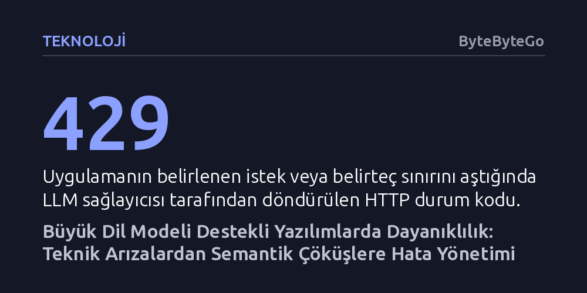

TEKNOLOJI · ByteByteGo · 2026-09-08
Büyük dil modelleriyle çalışan uygulamalarda hatalar salt ağ kesintilerinden ibaret değildir; modelin teknik olarak başarılı dönüp uydurma veya hatalı yanıtlar üretmesi sistemi çökertebilir. Dayanıklı bir mimari için klasik devre kesiciler, semantik doğrulama ve kademeli gerileme mekanizmalarıyla birlikte kurgulanmalıdır.
Bir yapay zekâ uygulamasının kararlılığını sağlamanın yalnızca HTTP hatalarını yakalamaktan ibaret olmadığını, asıl riskin teknik olarak başarılı görünen ancak anlamsal açıdan kusurlu yanıtlar olduğunu gösterir.

Geleneksel yazılım dünyasında 5 ile 7'yi toplayan bir fonksiyon her zaman 12 sonucunu verir. Bir işlem hata fırlatmadan tamamlandıysa, üretilen çıktının doğru ve geçerli olduğu varsayılır. Oysa büyük dil modelleri (LLM) devreye girdiğinde bu deterministik zemin tamamen ortadan kalkar. Model destekli bir uygulama, dışarıdan bakıldığında sıradan bir yazılım gibi görünse de çekirdeğinde olasılıksal bir yapay zekâ motoru barındırır.
Bu durum hata yönetimini kökten değiştirir. Geleneksel mimariler çoğunlukla sistemin işlemi tamamlayamadığı teknik hatalara odaklanır; ağ kopmaları, zaman aşımları, geçersiz kimlik bilgileri veya çöken sunucular bu kategoridedir. LLM uygulamalarında ise bunlara çok daha sinsi bir tehdit eklenir: semantik hatalar. Teknik açıdan HTTP 200 koduyla başarıyla tamamlanan bir istek, uygulamanın beklediği JSON yerine düz metin döndürebilir, gerçekte var olmayan bir şirket politikasını uydurabilir veya kritik bir iş kuralını çiğneyebilir.
Dolayısıyla bir LLM uygulamasını dayanıklı kılmak, istisnaları basit try-catch bloklarıyla yakalamaktan çok daha fazlasını gerektirir. Modelin ürettiği çıktının mantıksal, biçimsel ve operasyonel geçerliliğini denetlemeyen bir mimari, teknik olarak kusursuz çalışsa dahi üretim ortamında sessizce çökebilir.
Bir LLM uygulamasında istek akışı tek bir API çağrısından ibaret değildir; uçtan uca çok sayıda sınır geçişi içerir. Örneğin bir e-ticaret asistanı önce ürün veritabanını tarar, sonuçları modele iletir, modelden seçim yapmasını ister ve ardından envanter servisini tetikler. Bu zincirin her bir halkası kendine özgü arıza olasılıkları taşır. Boş bir mesaj ya da aşırı büyük bir dosya daha modele ulaşmadan süreci tıkayabileceği gibi, harici envanter servisinin çökmesi tüm akışı sekteye uğratabilir.
Giriş aşamasında yapılacak erken doğrulamalar, gereksiz maliyetleri ve gecikmeleri önlemenin ilk adımıdır. Eksik bir e-posta adresini veya dosya boyutu sınırını denetlemek için pahalı bir LLM çağrısı yapmak kaynak israfıdır. İstek modele ulaştığında ise hız sınırları (HTTP 429), bağlam penceresi (context window) aşımı ve zaman aşımları baş gösterir. Özellikle modelin işleyebileceği belirteç sınırını aşmak, çıktının yarıda kesilmesine ya da doğrudan reddedilmesine yol açar; bu nedenle istek öncesinde belirteç sayımı ve geçmiş özetleme hayati hale gelir.
Modellerin dış dünyayla etkileşime giren ajanlara dönüştüğü senaryolarda ise risk daha da katlanır. Modelin doğru argümanlarla araç çağırmaması bir yana, aracın başarılı olup geri bildirim ağının koptuğu anlar en tehlikeli kırılmaları yaratır. Örneğin bir ödeme API'si başarıyla tetiklendikten hemen sonra bağlantı koparsa, uygulamanın durumu bilmeden işlemi körü körüne tekrar denemesi müşteriden mükerrer ücret tahsil edilmesine yol açabilir. Bu sebeple eylemlerin tekrarlanabilirliği (idempotency) ve durum takibi zorunludur.
Ortaya çıkan aksaklıkları yönetmek için öncelikle hatanın doğasını ayrıştırmak gerekir. Geçici hatalar (ağ dalgalanmaları, anlık sunucu yükleri, hız limitleri) genellikle kısa bir beklemenin ardından çözülür. Kalıcı hatalar (geçersiz API anahtarları, yetki yetersizlikleri, hatalı parametreler) ise sistemde bir düzeltme yapılmadıkça tekrarlayacaktır. Hatanın türünü doğru teşhis etmek, sisteme gereksiz yük bindirmeden uygun müdahalede bulunmanın ön koşuludur.
Geçici arızalarda en etkili yöntem yeniden denemedir (retry), fakat kontrolsüz denemeler sistemi felakete sürükleyebilir. Sonsuz deneme döngüleri hem sağlayıcı faturasını kabartır hem de zaten zorlanan bir sunucuyu büsbütün çökertebilir. Güvenli yaklaşım, denemeler arasındaki süreyi katlayarak artıran üstel geri çekilme (exponential backoff) stratejisidir. Buna ek olarak, aynı anda başarısız olan binlerce istemcinin aynı saniyede tekrar yüklenmesini engellemek için gecikme sürelerine rastgele sapmalar (jitter) eklenmelidir.
Sağlayıcının tamamen erişilmez olduğu ve her isteğin zaman aşımına uğradığı durumlarda ise devre kesici (circuit breaker) mekanizması devreye girer. Sistem normalde kapalı konumda akışı sürdürürken, hata oranı eşiği aştığında devre açık konuma geçer ve yeni istekler derhal reddedilir ya da alternatif yollara aktarılır. Servisin toparlanıp toparlanmadığı yarı açık durumda gönderilen az sayıda test isteğiyle anlaşılır; böylece başarısız çağrıların tüm sistemi zehirlemesi önlenir.
Dayanıklılık, sistemin hiçbir zaman arızalanmaması değil; arıza anında bile işlevini kontrollü şekilde sürdürebilmesidir. Bu yaklaşım yazılım mühendisliğinde zarif gerileme (graceful degradation) olarak tanımlanır. Birincil ve en yetenekli dil modeline ulaşılamadığında, sistemin tamamen hata ekranı göstermesi yerine daha küçük ve ucuz bir yedek modele geçmesi, o da çalışmıyorsa önbellekteki genel kılavuzları veya önceden tanımlanmış yanıtları sunması gerekir.
Yedekleme mekanizması kurgulanırken yapılan en büyük hata, tekil arıza noktası (single point of failure) yaratmaktır. Eğer birincil model ile yedek model aynı bulut sağlayıcısının altyapısından çağrılıyorsa, genel bir kesintide her iki hat birden çökecektir. Gerçek bir yedeklilik, bağımsız altyapı sağlayıcılarının harmanlanmasını şart koşar. Ayrıca görev kritikliğine göre gerileme stratejisi seçilmelidir; karmaşık bir hukuki metni özetlemek için rastgele küçük bir model seçilemeyeceği gibi, anlık bakiye bilgisi için de statik önbellek yanıtı kullanılamaz.
Son savunma hattı ise modelin uydurma (halüsinasyon) eğilimine karşı yapılandırılmış çıktılar (structured outputs) ve insan denetimidir. Şema doğrulamaları ile modelin çıktısı sınırlandırılmalı, güvenilir veri kaynaklarıyla çapraz kontroller yapılmalı ve riskli operasyonel kararlarda otomatik akış durdurulup insan onayına başvurulmalıdır. Kullanıcı kuyrukları ve eşzamanlılık kotaları sayesinde de etkileşimli sohbetler arka plan işlerinin kurbanı edilmeden sistem dengede tutulmalıdır.